<title>Phone Menu Finale</title>
<meta name="claude:viewport-fit-sides" content="cover">
<link rel="preconnect" href="https://fonts.googleapis.com">
<link rel="preconnect" href="https://fonts.gstatic.com" crossorigin>
<link rel="stylesheet" href="https://fonts.googleapis.com/css2?family=Ysabeau:wght@650&display=swap">
<style>
  /* Layout: one column; today's crane first, then each idea: its words, then a whole phone screen
     of the real menu, a close-up of its foot and the same on a tablet. */
  :root {
    --paper: #f6f1e7;
    --ink: #1d1b18;
    --ink-soft: #5d574e;
    --rule: #ddd4c4;
    --gold: #a77c25;
    --pick: #2f4a3a;
    --title: "Ysabeau", "Palatino Linotype", Palatino, Georgia, serif;
    --body: system-ui, -apple-system, "Segoe UI", Roboto, sans-serif;
  }
  @media (prefers-color-scheme: dark) {
    :root:not([data-theme="light"]) {
      --paper: #1b1a17; --ink: #f1ece2; --ink-soft: #b9b0a2;
      --rule: #3a3630; --gold: #d6aa52; --pick: #9cc3a8; color-scheme: dark;
    }
  }
  :root[data-theme="dark"] {
    --paper: #1b1a17; --ink: #f1ece2; --ink-soft: #b9b0a2;
    --rule: #3a3630; --gold: #d6aa52; --pick: #9cc3a8; color-scheme: dark;
  }
  body {
    background: var(--paper);
    color: var(--ink);
    font: 17px/1.55 var(--body);
    padding-left: max(16px, env(safe-area-inset-left, 0px));
    padding-right: max(16px, env(safe-area-inset-right, 0px));
  }
  main { max-width: 1000px; margin: 0 auto; padding-block: 40px 72px; display: grid; gap: 52px; }
  h1, h2 { font-family: var(--title); font-weight: 650; text-wrap: balance; margin: 0; letter-spacing: -0.01em; }
  h1 { font-size: clamp(34px, 6vw, 52px); line-height: 1.05; }
  h2 { font-size: clamp(26px, 4vw, 34px); line-height: 1.1; }
  p { margin: 0; max-width: 62ch; }
  .intro { display: grid; gap: 12px; }
  .intro p { color: var(--ink-soft); font-size: 18px; }
  .choice { display: grid; gap: 14px; padding-top: 26px; border-top: 1px solid var(--rule); }
  .head { display: flex; flex-wrap: wrap; align-items: baseline; gap: 10px 16px; }
  .letter { font-family: var(--title); font-size: clamp(44px, 7vw, 60px); line-height: 0.8; color: var(--gold); font-weight: 650; }
  .score { font: 600 15px/1 var(--body); font-variant-numeric: tabular-nums; padding: 7px 11px; border: 1px solid var(--rule); border-radius: 999px; color: var(--ink-soft); }
  .tag { font: 600 13px/1 var(--body); letter-spacing: 0.06em; text-transform: uppercase; color: var(--paper); background: var(--pick); padding: 7px 10px; border-radius: 999px; }
  .what { font-size: 18px; }
  .note { color: var(--ink-soft); }
  .shots { display: grid; grid-template-columns: 1fr 1.35fr; gap: 12px; align-items: start; }
  .shots .tablet { grid-column: 2; }
  .shots .screen { grid-row: span 2; }
  figure { margin: 0; display: grid; gap: 6px; min-width: 0; }
  figure img { display: block; width: 100%; height: auto; border: 1px solid var(--rule); border-radius: 6px; }
  figcaption { font-size: 13px; color: var(--ink-soft); letter-spacing: 0.02em; }
  .group { font: 600 14px/1.2 var(--body); letter-spacing: 0.08em; text-transform: uppercase; color: var(--ink-soft); margin-bottom: -30px; }
  /* The opening's hummingbird laid over a shot: its far wing behind its body, its near wing over
     it, both on their first frame, raised as painted (the homepage's rest). */
  .scene { position: relative; overflow: hidden; border: 1px solid var(--rule); border-radius: 6px; }
  .scene img { border: 0; border-radius: 0; }
  .bird { position: absolute; aspect-ratio: 1600 / 1062; }
  .bird .body { position: absolute; inset: 0; width: 100%; height: 100%; }
  .wing {
    position: absolute; left: 16.19%; top: 14.174%; width: 45.644%; height: 76.931%;
    background-size: 600% 100%; background-repeat: no-repeat; background-position: 0 0;
  }
  @media (max-width: 640px) {
    .shots { grid-template-columns: 1fr; }
    .shots .tablet, .shots .screen { grid-column: auto; grid-row: auto; }
    .shots .close { order: -1; }
    .shots .screen { width: 72%; }
  }
</style>
<main>
  <header class="intro">
    <h1>The phone menu's last crane</h1>
    <p>Tap Menu on a phone: a small crane stands at the bottom. It is the last crane on the site. Here are California ideas to replace it, put into the real menu of the demo. Nothing on the site has changed.</p>
    <p>Mo picked E with its wings still. It is built first below, then the ideas as they were mocked. The black line under the crane goes in all of them: each stands on its own painted ground.</p>
  </header>
  <section class="choice" aria-labelledby="built-name">
    <div class="head"><span class="letter">E</span><h2 id="built-name">Built: the hummingbird at a flower</h2><span class="tag">Mo's pick</span></div>
    <p class="what">Your pick, built into the site on this computer (not live yet). The homepage's own hummingbird, its wings resting, raised as painted, sipping from the California fuchsia. Nothing moves; it stands where the crane stood, and Log in and Sign up stay where they were.</p>
    <div class="shots">
      <figure class="screen">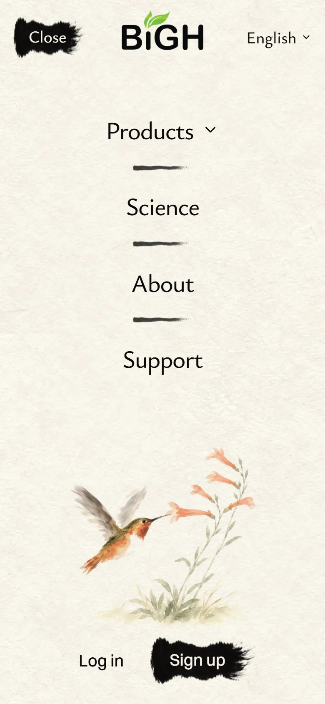<figcaption>The phone menu, whole</figcaption></figure>
      <figure class="close">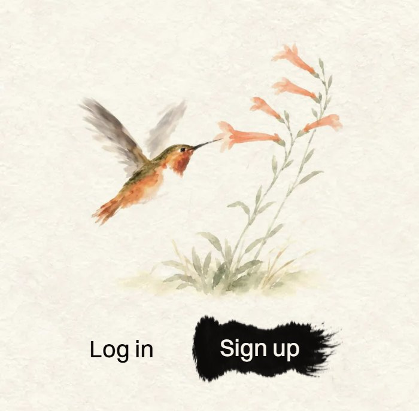<figcaption>Phone, close-up</figcaption></figure>
      <figure class="tablet">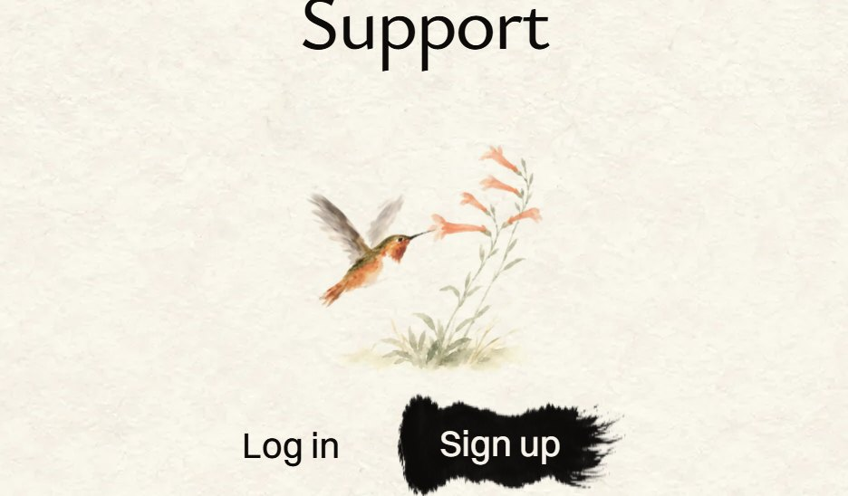<figcaption>Tablet, close-up</figcaption></figure>
    </div>
  </section>
  <section class="choice" aria-labelledby="now-name">
    <div class="head"><h2 id="now-name">Today: the crane at rest</h2></div>
    <p class="what">Tap Menu on a phone and a small crane stands at the bottom, on a black brush line. It was the footer's crane in miniature. The footer has quail now, so the two no longer match.</p>
    <div class="shots">
      <figure class="screen">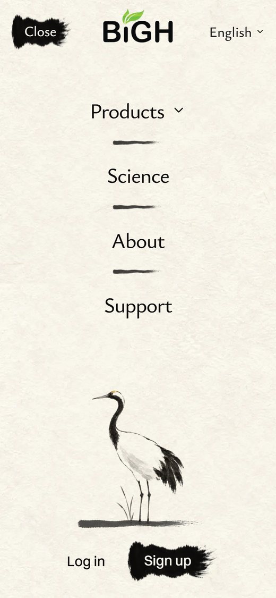<figcaption>The phone menu, whole</figcaption></figure>
      <figure class="close">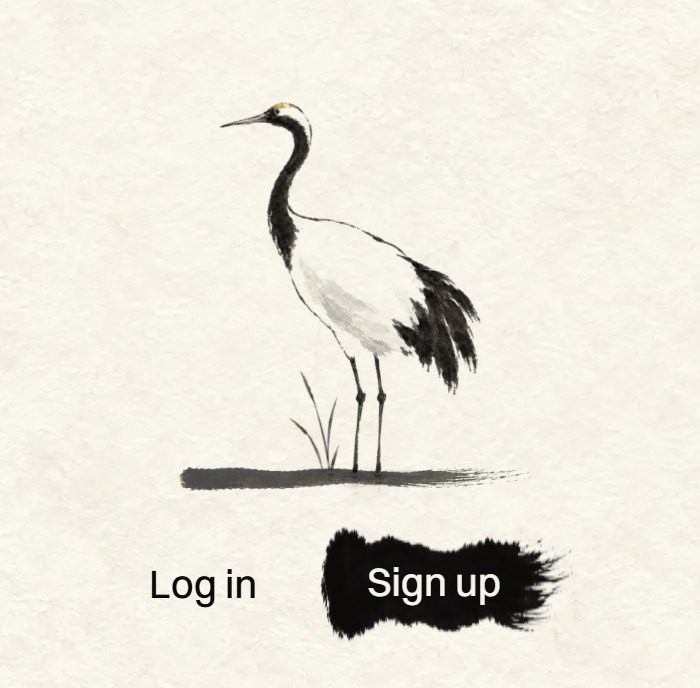<figcaption>Phone, close-up</figcaption></figure>
      <figure class="tablet">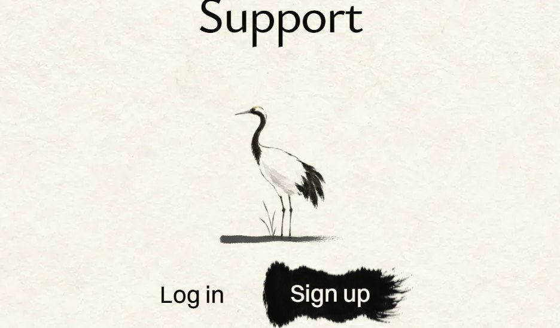<figcaption>Tablet, close-up</figcaption></figure>
    </div>
  </section>
  <p class="group">The hummingbird (new)</p>
  <section class="choice" aria-labelledby="d-name">
    <div class="head">
      <span class="letter">D</span>
      <h2 id="d-name">The hummingbird, at rest</h2>
      <span class="score">8.5 / 10</span>
      
    </div>
    <p class="what">Allen's hummingbird on a bare twig, the way it sits and keeps watch over its flowers. A new painting of the homepage's bird, in the same calm copper.</p>
    <p class="note">Still and quiet, like the crane at rest. Its beak is a fine dark line, a little sharper than the rest of the painting.</p>
    <div class="shots">
      <figure class="screen">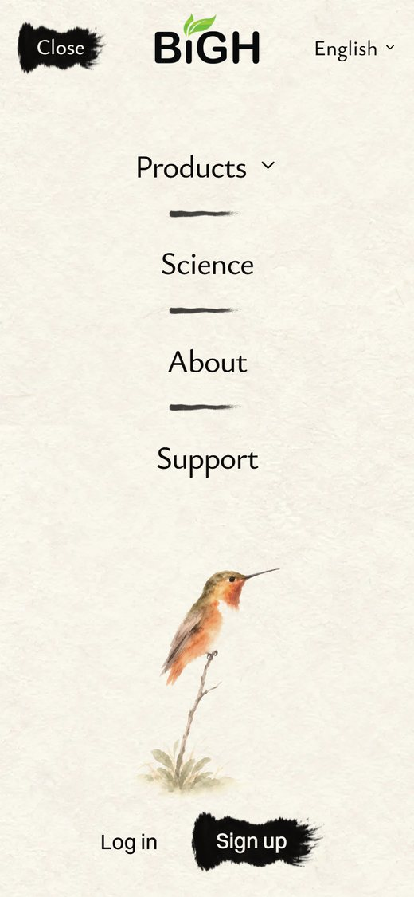<figcaption>The phone menu, whole</figcaption></figure>
      <figure class="close">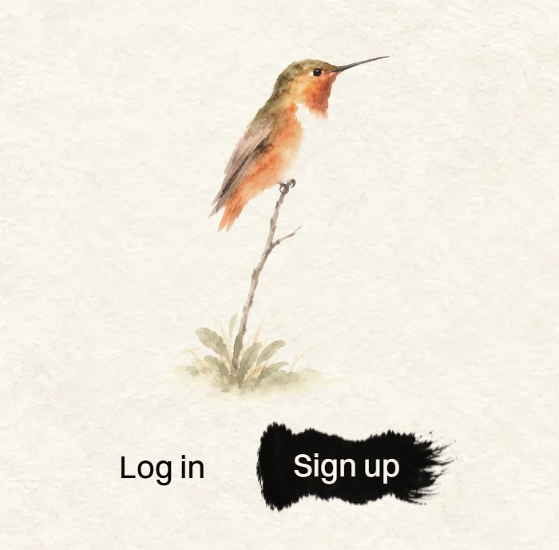<figcaption>Phone, close-up</figcaption></figure>
      <figure class="tablet">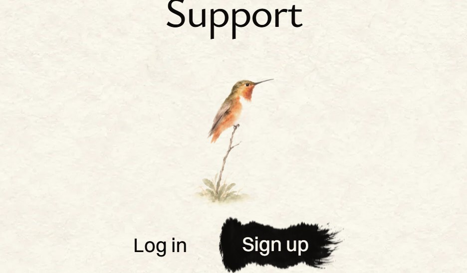<figcaption>Tablet, close-up</figcaption></figure>
    </div>
  </section>
  <section class="choice" aria-labelledby="e-name">
    <div class="head">
      <span class="letter">E</span>
      <h2 id="e-name">The hummingbird at a flower</h2>
      <span class="score">9 / 10</span>
      <span class="tag">My pick</span>
    </div>
    <p class="what">The homepage's own hummingbird, sipping from California fuchsia, a wildflower of the dry hills that hummingbirds love. Only the flower is a new painting.</p>
    <p class="note">Now still: its wings rest, raised, as they are painted, and nothing moves beside the menu's words. The bird that greets you on the homepage is waiting at the end of the menu.</p>
    <div class="shots">
      <figure class="screen"><div class="scene">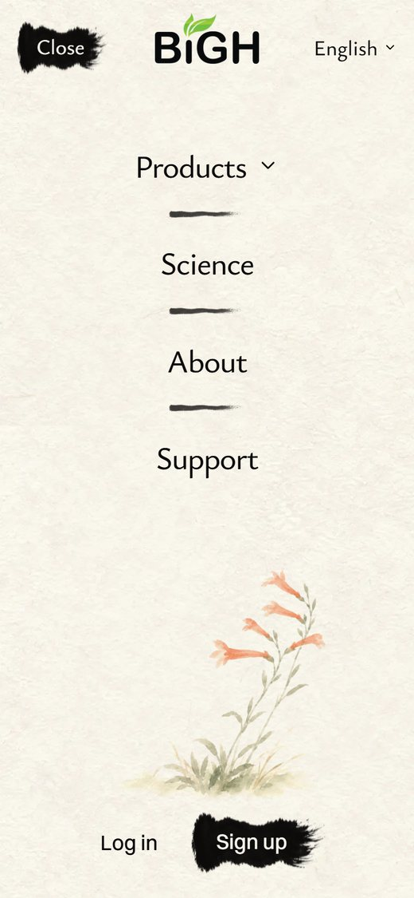<span class="bird" style="left:11.538%;top:66.156%;width:57.308%"><span class="wing" style="background-image:url(e-far.webp)"></span>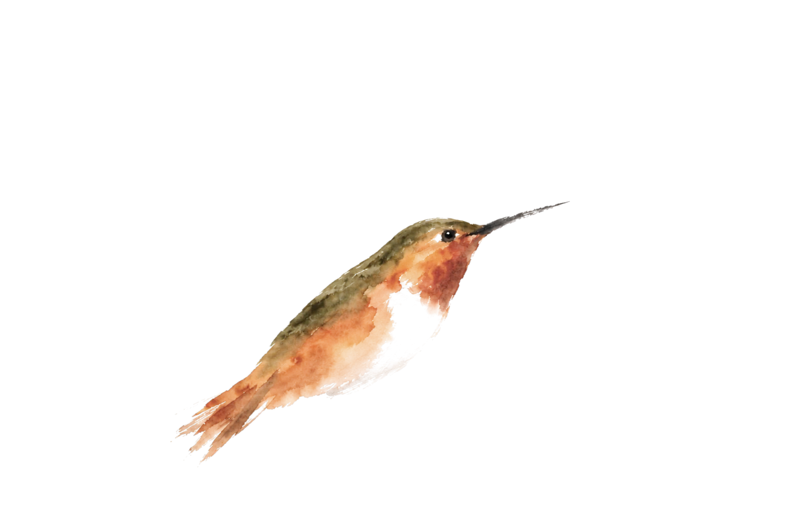<span class="wing" style="background-image:url(e-near.webp)"></span></span></div><figcaption>The phone menu, whole</figcaption></figure>
      <figure class="close"><div class="scene">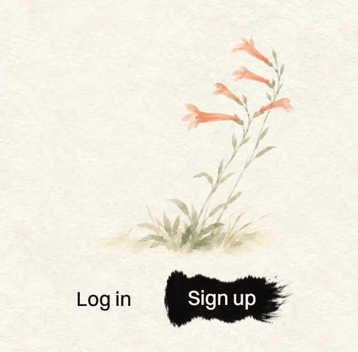<span class="bird" style="left:7.143%;top:16.965%;width:63.857%"><span class="wing" style="background-image:url(e-far.webp)"></span><span class="wing" style="background-image:url(e-near.webp)"></span></span></div><figcaption>Phone, close-up</figcaption></figure>
      <figure class="tablet"><div class="scene">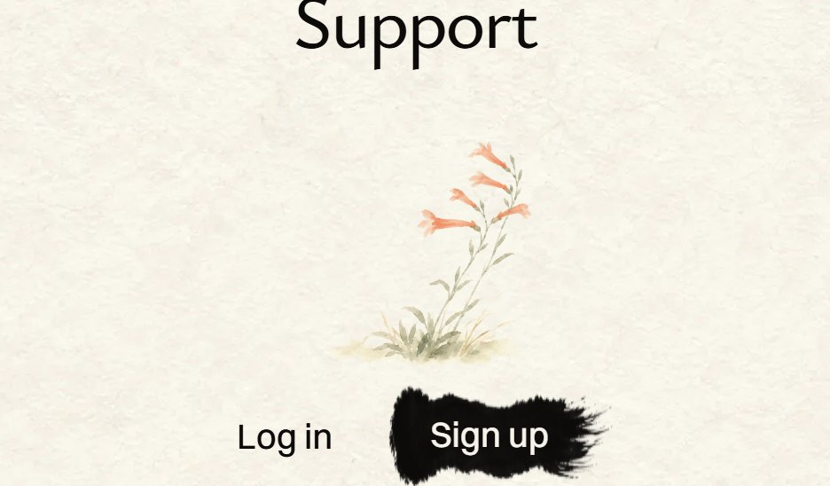<span class="bird" style="left:31.177%;top:33.959%;width:28.048%"><span class="wing" style="background-image:url(e-far.webp)"></span><span class="wing" style="background-image:url(e-near.webp)"></span></span></div><figcaption>Tablet, close-up</figcaption></figure>
    </div>
  </section>
  <p class="group">Earlier ideas</p>
  <section class="choice" aria-labelledby="a-name">
    <div class="head">
      <span class="letter">A</span>
      <h2 id="a-name">One quail</h2>
      <span class="score">9 / 10</span>
      
    </div>
    <p class="what">The footer's lookout quail, standing on its own. The same bird and the same few wet washes as the two quail at the bottom of every page. One bird fits the tall spot the crane stood in.</p>
    <p class="note">Softer and paler than the crane, so it sits quietly under the menu's words. On a tablet it is small, as the crane was.</p>
    <div class="shots">
      <figure class="screen">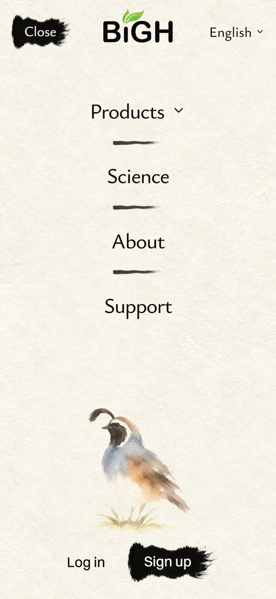<figcaption>The phone menu, whole</figcaption></figure>
      <figure class="close">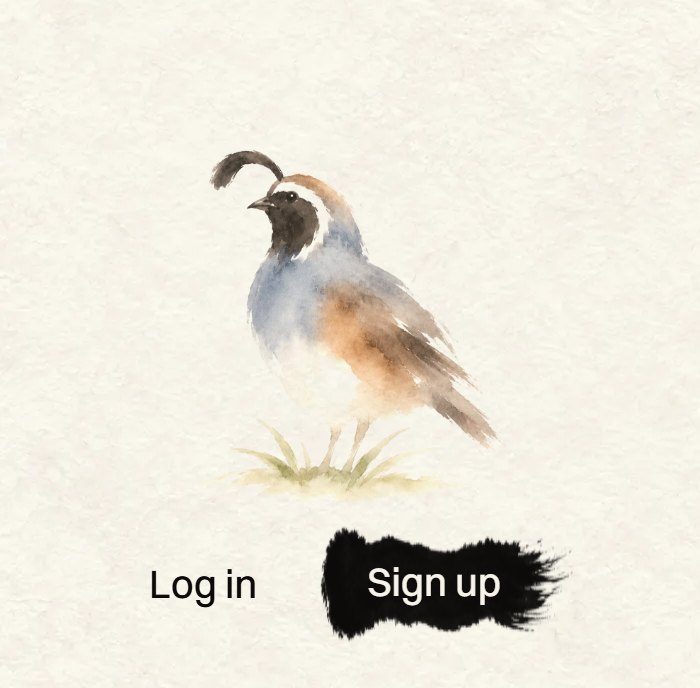<figcaption>Phone, close-up</figcaption></figure>
      <figure class="tablet">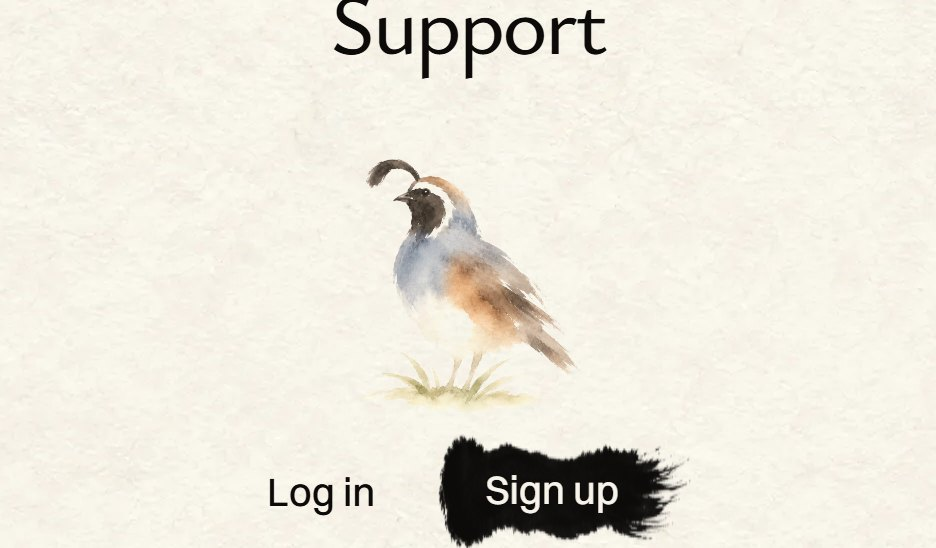<figcaption>Tablet, close-up</figcaption></figure>
    </div>
  </section>
  <section class="choice" aria-labelledby="b-name">
    <div class="head">
      <span class="letter">B</span>
      <h2 id="b-name">The footer's two quail</h2>
      <span class="score">8 / 10</span>
      
    </div>
    <p class="what">The footer's own painting, made smaller. No new painting.</p>
    <p class="note">You would see the same picture twice in one visit. On a phone the bending quail gets small.</p>
    <div class="shots">
      <figure class="screen">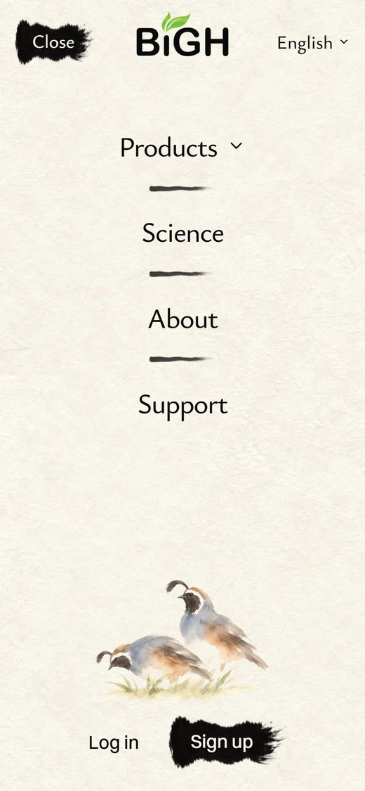<figcaption>The phone menu, whole</figcaption></figure>
      <figure class="close">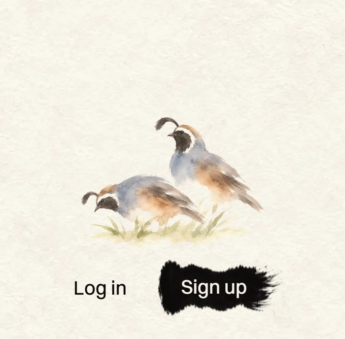<figcaption>Phone, close-up</figcaption></figure>
      <figure class="tablet">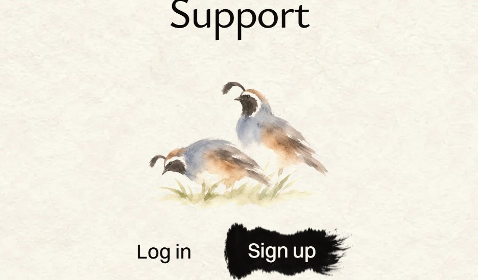<figcaption>Tablet, close-up</figcaption></figure>
    </div>
  </section>
  <section class="choice" aria-labelledby="c-name">
    <div class="head">
      <span class="letter">C</span>
      <h2 id="c-name">California poppies</h2>
      <span class="score">8 / 10</span>
      
    </div>
    <p class="what">California's state flower, the poppy from the park sign, on its own: two flowers and a bud.</p>
    <p class="note">The brightest thing in the menu: its orange pulls your eye away from the words. Poppies are already on About and on the park sign.</p>
    <div class="shots">
      <figure class="screen">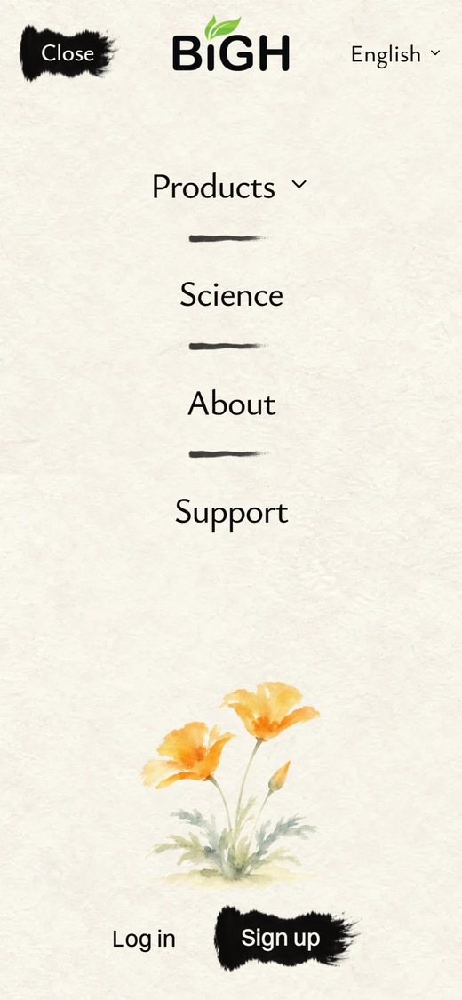<figcaption>The phone menu, whole</figcaption></figure>
      <figure class="close">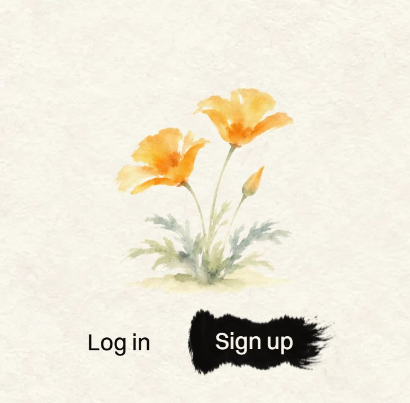<figcaption>Phone, close-up</figcaption></figure>
      <figure class="tablet">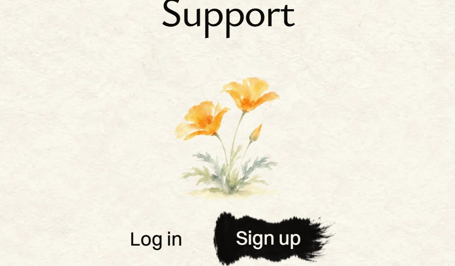<figcaption>Tablet, close-up</figcaption></figure>
    </div>
  </section>
</main>
